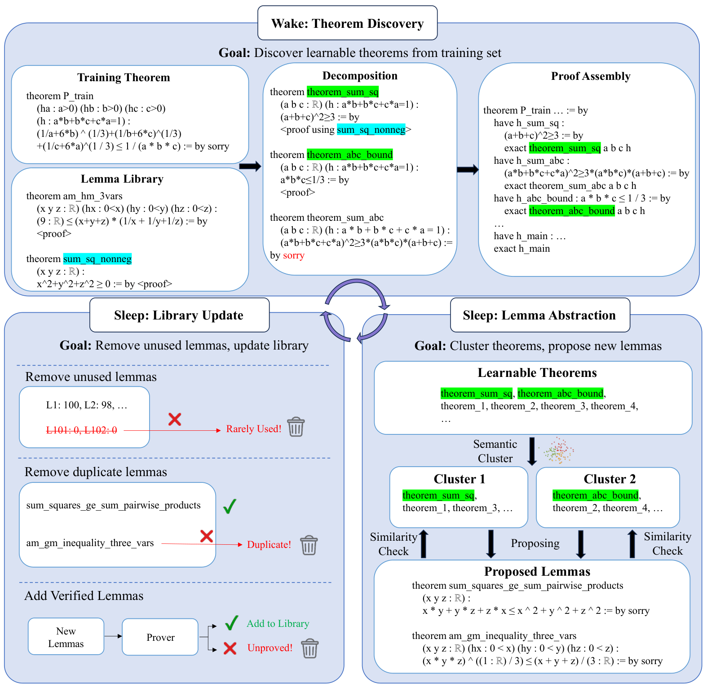
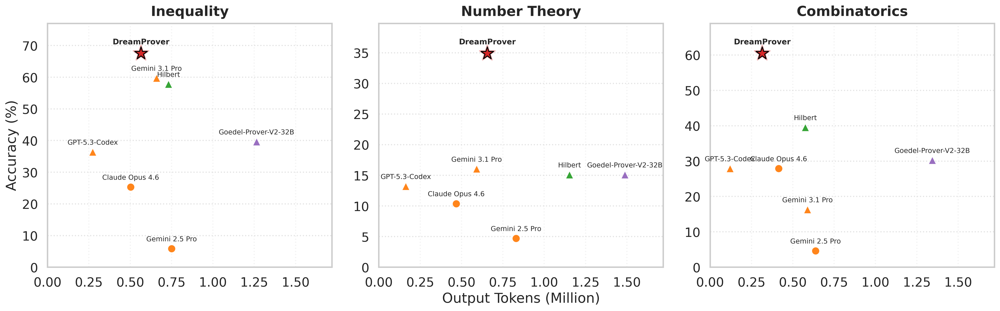
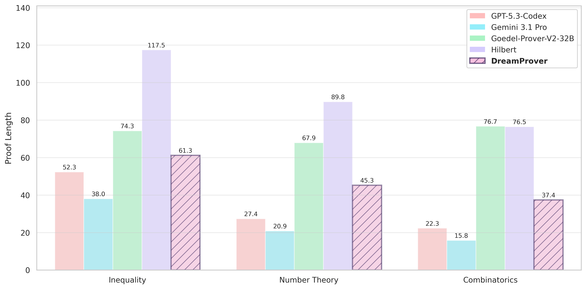

LLM agent generates and verifies Lean 4 proofs with Mathlib, learning reusable lemma libraries evaluated on Lean benchmarks such as PutnamBench, CombiBench and LeanGeo-Bench.
Abstract
We introduce DreamProver, an agentic framework that leverages a "wake-sleep" program induction paradigm to discover reusable lemmas for formal theorem proving. Existing approaches either rely on fixed lemma libraries, which limit adaptability, or synthesize highly specific intermediate lemmas tailored to individual theorems, thereby lacking generality. DreamProver addresses this gap through an iterative two-stage process. In the wake stage, DreamProver attempts to prove theorems from a training set using the current lemma library while proposing new candidate lemmas. In the "sleep" stage, it abstracts, refines, and consolidates these candidates to compress and optimize the library. Through this alternating cycle, DreamProver progressively evolves a compact set of high-level, transferable lemmas that can be effectively used to prove unseen theorems in related domains. Experimental results demonstrate that DreamProver substantially improves proof success rates across a diverse set of mathematical benchmarks, while also producing more concise proofs and reducing computational cost.
Problem
LLM-based theorem provers usually treat each theorem in isolation. They rely either on fixed lemma libraries or on problem-specific intermediate lemmas that rarely transfer to other problems.
Approach
DreamProver alternates wake and sleep stages. In the wake stage, an LLM decomposes training theorems into subgoals and proves them in Lean 4 using the current lemma library. In the sleep stage, intermediate theorems are semantically clustered and abstracted into general candidate lemmas, which are verified and pruned to keep the library compact. The learned domain-specific libraries are then used to prove unseen test theorems.

Figure 1: Overview of DreamProver as an iterative wake–sleep framework for learning a reusable lemma library. In the wake phase (top), the system attempts to prove a target theorem x using the current library L , where an LLM decomposes the problem into subgoals and constructs a proof p_{x} by leveraging existing lemmas. In the sleep phase (bottom), the resulting subgoals and intermediate theorems
Results
Across inequality, number theory, combinatorics, plane geometry and ML-theory benchmarks, DreamProver proves more theorems than proprietary LLMs, open-source provers and the Hilbert agent. It also produces shorter proofs at lower token cost. Ablations show library optimization and cluster evolving each contribute substantially.

Figure 2: Total number of output tokens (millions) per sample on three well-represented domain benchmarks.

Figure 3: Proof length statistics on three well-represented domain benchmarks.
Method
567NEQ
ChenNEQ
MO-INT
Total
DreamProver
55
33
16
104
- library optimization
31
30
15
76
- cluster evolving
21
23
9
53
No library
23
24
8
55
+ retrieval (LEGO-Prover)
27
25
9
61
Ablation on inequality benchmarks (theorems proved)